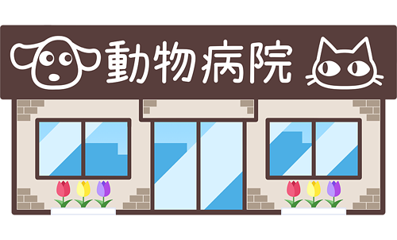

あべ川動物病院について

あべ川動物病院は、1980年に静岡市駿河区で開院した歴史ある動物病院です。
地域に密着した診療を行い、ペットと飼い主様の健康をサポートしています。
当院の目標は、ペットの健康管理と飼い主様の経済的負担の軽減です。
定期的な健康診断、予防接種、適切な栄養管理などを通じて、早期発見と適切な治療を心がけています。
また、心臓病や糖尿病などの慢性疾患にも対応し、ペットの生活の質の向上に努めています。
トリミングサービスも提供し、ペットの見た目と健康をサポートしています。
当院では、犬、猫、ウサギ、ハムスターなどの動物の診療を行っています。
飼い主様のニーズに合わせた最適な医療サービスをご提供します。
地域に根差した動物病院として、ペットと飼い主様の幸せを願っています。
診療情報
診療時間・休診日
| 診察時間 |
午前 9:30 ~ 12:00 午後 15:00 ~ 18:00 (最終受付 17:30) |
|---|---|
| 休診日 |
火曜日 日曜日 |